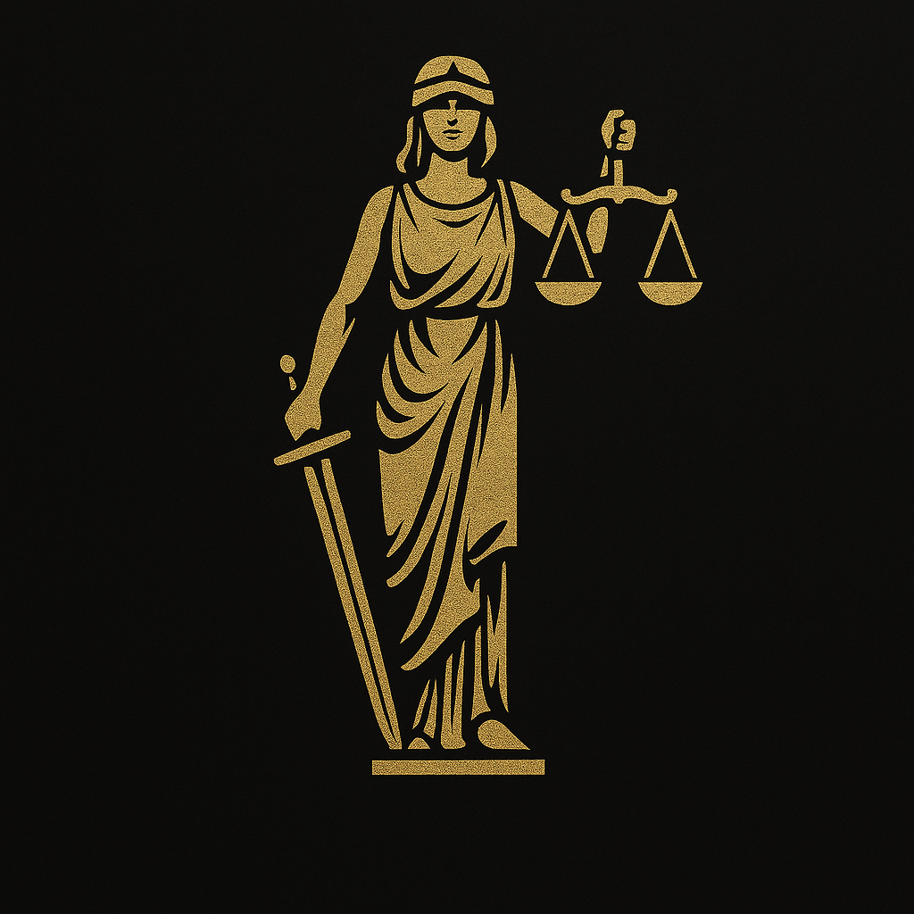

Hakkımızda
Düzdemir Hukuk & Danışmanlık olarak, müvekkillerimize profesyonel ve çözüm odaklı hukuki danışmanlık hizmeti sunuyoruz. Ankara'da faaliyet gösteren büromuz, uzman kadromuzla birlikte hukuki sorunlarınıza etkin çözümler üretmektedir.

Düzdemir Hukuk & Danışmanlık olarak, müvekkillerimize profesyonel ve çözüm odaklı hukuki danışmanlık hizmeti sunuyoruz. Ankara'da faaliyet gösteren büromuz, uzman kadromuzla birlikte hukuki sorunlarınıza etkin çözümler üretmektedir.
Düzdemir Hukuk & Danışmanlık olarak geniş bir yelpazede hukuki hizmetler sunmaktayız. Alanında uzman avukatlarımızla müvekkillerimize profesyonel ve çözüm odaklı yaklaşımlar sunuyoruz.
Müvekkillerimizin ceza davalarında haklarını korumak için soruşturma aşamasından yargılamanın sonuna kadar titizlikle çalışıyoruz.
Savunma stratejilerimizi her davaya özel olarak hazırlıyor, adil yargılanma hakkının sağlanması için tüm hukuki araçları etkin şekilde kullanıyoruz.
Vergi mevzuatının karmaşık yapısı içinde müvekkillerimize rehberlik ediyor, vergi planlaması ve uyuşmazlık çözümleri sunuyoruz.
Vergi incelemelerinden, dava süreçlerine kadar tüm aşamalarda profesyonel destek sağlıyoruz.
Vergi ceza hukukunda uzman ekibimizle, vergi kaçakçılığı, usulsüzlük ve kabahat cezalarına karşı etkili savunmalar geliştiriyoruz.
Vergi suçlarında hem idari hem adli süreçlerde müvekkillerimizin haklarını koruyoruz.
Alacak tahsilatı ve borç yönetiminde hukuki süreçleri etkin şekilde yürütüyor, haciz ve iflasa ilişkin konularda danışmanlık hizmeti veriyoruz.
İcra takiplerine itiraz, menfi tespit ve istirdat davalarında uzman çözümler sunuyoruz.
Şirket kuruluşundan tasfiyesine, birleşme ve devralmalardan pay devrine kadar tüm süreçlerde hukuki danışmanlık hizmeti veriyoruz.
Şirket içi anlaşmazlıklar, yönetim kurulu sorumlulukları ve ortaklık haklarında uzman çözümler üretiyoruz.
Sözleşme hazırlama, inceleme ve müzakere süreçlerinde hukuki destek sağlıyor, borç-alacak ilişkilerinden doğan uyuşmazlıklarda çözüm odaklı yaklaşımlar sunuyoruz.
Her türlü ticari ve bireysel sözleşmelerin hazırlanması ve ihlal durumunda hukuki takip sürecinde yanınızdayız.
İdari işlem ve eylemlere karşı iptal ve tam yargı davaları açma, idarenin hukuka aykırı tutumlarına karşı hak arama süreçlerinde uzman destek veriyoruz.
Kamu ihale uyuşmazlıkları, imar hukuku ve kamulaştırma davalarında tecrübeli ekibimizle yanınızdayız.
İşveren ve işçi ilişkilerinde hukuki danışmanlık, iş sözleşmesi hazırlama, fesih, tazminat ve işe iade davalarında uzmanlaşmış avukatlarımızla hizmet veriyoruz.
İş kazaları, mobbing, toplu iş hukuku ve sosyal güvenlik uyuşmazlıklarında hukuki çözümler sunuyoruz.
Adres: Korkutreis Mahallesi İlkiz Sokak 19/9 Kaş İş Merkezi Çankaya/Ankara
Telefon:
0535 254 97 34
E-posta:
eceduzdemir@icloud.com
Çalışma Saatleri:
Pazartesi - Cuma: 09:00 - 18:00
Acil durumlarda hafta sonu randevu alınabilir.
Bölgeler: Sıhhiye, Kızılay, Çankaya, Bahçelievler, Ankara merkez ve tüm ilçelere hizmet vermekteyiz.